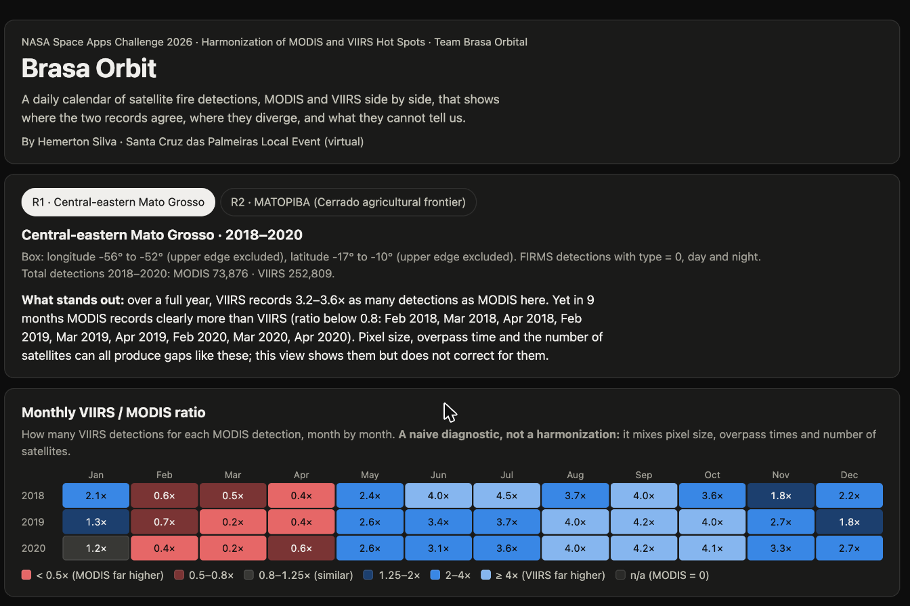

NASA Space Apps Challenge 2026 · Harmonization of MODIS and VIIRS Hot Spots
MODIS and VIIRS active-fire detections, side by side, in one calendar.
Hemerton Silva (hemertonsilva) · Team Brasa Orbital
Santa Cruz das Palmeiras Local Event (virtual) · 14–15 Nov 2026
Use ↓ / → or scroll to move between slides.
The problem
About 1 km pixels. Two satellites: Terra and Aqua.
375 m pixels. One satellite in this calendar. Production ceased at 15:40 UTC on 2 Nov 2026 (FIRMS FAQ).
What we built

What the calendar reveals · R1, central-eastern Mato Grosso
as many VIIRS as MODIS detections over a full year (2018–2020)
where MODIS records clearly more (ratio below 0.8): February–April of 2018, 2019 and 2020. Unexpected; still to be verified.
Same timing: both sensors peak in September every year, in both regions.
No single scaling factor fits every month in these data. MODIS here is Terra + Aqua; VIIRS is S-NPP only.
VIIRS/MODIS ratio of detection counts. Blue: VIIRS higher. Red: MODIS higher. Dashed line = 1 (equal counts). Naive diagnostic, not harmonization.
NASA data
type == 0 (presumed vegetation fire), day and night, dates in UTC.We acknowledge the use of data and/or imagery from NASA's Fire Information for Resource Management System (FIRMS) (https://earthdata.nasa.gov/firms), part of NASA's Land, Atmosphere Near real-time Capability for Earth observations (LANCE) (https://earthdata.nasa.gov/lance) and NASA's Earth Science Data and Information System (ESDIS).
Data accessed on 15 Nov 2026.
Next step and limits
Not harmonized: raw counts, and the ratio is a naive diagnostic. A detection is not a fire, nor burned area (pixels about 1 km vs 375 m). No cloud or coverage information: no detection recorded ≠ no fire. Two regions in Brazil, 2018–2020. No causal claims; not an operational alert or forecast.
Who could use this · how it scales
To see whether a difference between periods comes from the ground or from the change of sensor.